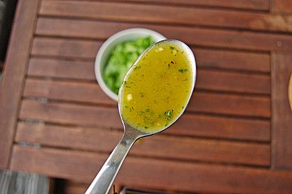

Rezepte für alle
Home
Category
Alle Rezepte Rezepte | Chefkoch
Alle Gerichte Rezepte | Chefkoch
Rezepte zum nachkochen und backen auf Alle-Rezepte.com
„Ein Blech für alle“-Ofenreisfleisch Rezept | LECKER
Schnelle Rezepte für jeden Tag | LECKER
Leckere & schnelle Rezepte für jeden Tag – alle unter 30 .
Hauptgerichte - [ESSEN UND TRINKEN]
Rezepte bei Chefkoch.de
Tim Mälzers Alltagsküche: Rezepte für jeden Tag - [ESSEN .
10 Ideen fürs Familien-Mittagessen ⋆ Lieblingszwei * Foodblog
Services
Privacy policy
Terms and Conditions
Photo gallery
Photo gallery
2021.06.24 14:19
Alle Rezepte Rezepte | Chefkoch
Alle Gerichte Rezepte | Chefkoch
Rezepte zum nachkochen und backen auf Alle-Rezepte.com
„Ein Blech für alle“-Ofenreisfleisch Rezept | LECKER
Schnelle Rezepte für jeden Tag | LECKER
Leckere & schnelle Rezepte für jeden Tag – alle unter 30 .
Hauptgerichte - [ESSEN UND TRINKEN]
Rezepte bei Chefkoch.de
Tim Mälzers Alltagsküche: Rezepte für jeden Tag - [ESSEN .
10 Ideen fürs Familien-Mittagessen ⋆ Lieblingszwei * Foodblog
Ideal für , die wenig Zeit zum Kochen haben und trotzdem leckere Gerichte zaubern möchten. . Schnelle mit Nudeln, Kartoffeln oder Fleisch?
Featured Projects

Menu
Last Photo